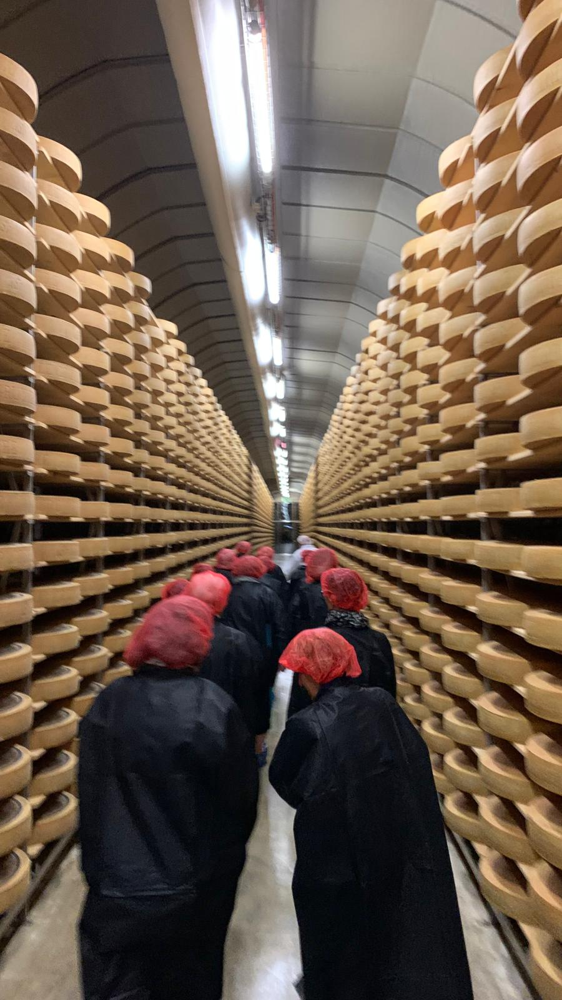

Willkommen beim
FRAUENVEREIN SARMENSTORF
Wir freuen uns, dich auf unserer Homepage begrüssen zu dürfen.
Du kannst dich hier über unser Vereinsangebot informieren.
Nicht lange studieren, schau vorbei!
Jahresprogramm
Wir freuen uns auf ein tolles Vereinsjahr!
Über uns
Der Frauenverein Sarmenstorf engagiert sich seit vielen Jahren für Gemeinschaft, Kultur und Begegnung im Dorf. Wir organisieren Anlässe, unterstützen Projekte und pflegen das Miteinander.
Mehr erfahren
